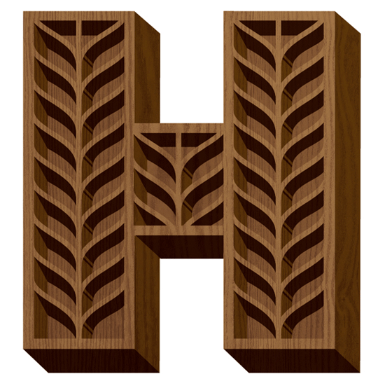

Jessica Hische
Letterer, Illustrator and Type designer
Who
Born April fourth, 1984 in Charleston South Carolina, Jessica Nicole Hische is a letterer, illustrator and type designer. Hische graduated with a degree in graphic and interaction design from the Tyler School of Art. After she achieved her degree in 2006 Jessica worked for Headcase Design based in Philadelphia, she then went on to a senior designer position at Louise Fili’s studio, Louise Fili Ltd which see thrived in for two and a half years. Jessica then left Louise Fili to accelerate in her freelance career.
She’s currently working from her shared design studio Title Case. Art was always something she wanted to do, ever since she was a child, and even today she claims drawing is her form of therapy. After one graphic design class she knew that was what she wanted to do for the rest of her life. Jessica is best known for her own personal projects, the ‘Daily drop cap’ and the ‘should I work for free flowchart’. She now splits her time between San Francisco and Brooklyn.
TopFonts
Jessica has many personal projects which includes fonts. The very first font that Jessica designed, she named ‘Buttermilk’ which was created in 2009 and is available to purchase from her store, at Veer and at MyFonts. Jessica explains the font as quirky but is extremely happy with it as it has been used on many big ventures such as Kellogg’s Special K packaging, the Holiday Barbie, ads for the Museum of Sex as well as many wedding invitations.
The latest font that Hische created is called Minot, it’s a new display typeface and Jessica explained that she had a lot of fun creating the font and wants her followers to have fun using it. The typeface was created in three different styles; Outline, Box and Fill, which are supposed to be used all together to create multi-colour/toned headlines, she feels that the font would look good on wedding invites, baby announcements and even wine labels.
TopLogos
Ron Lewis from Mail Chimp contacted Jessica about helping revamp their current logo she was overwhelmed as the company has been a great supporter of the design community and she had been happily using their services for years. Mailchimp is a marketing software allowing the user the ability to design and manage mailing lists, newsletters, campaigns and more. MailChimp weren’t looking for completely new logo just a facelift which would make the company not unrecognizable as they wanted to keep the playful side of the logo but tidy it up, allowing the logo to be read better whilst being more consistent.
Eventbrite has seen the work that Jessica had done for MailChimp and contacted her to redesign the logo of Eventbrite, an online event planning site which allows people to create event pages, register the people attending the event and track attendance and sell the tickets online or at the door. Jessica evaluated the initial Eventbrite logo as it was created very quickly. She created multiple updated versions of the logo to present to the director, a direction was chosen and Hische explored the different ways of evolving the logo which then lead to the final design which everyone was happy with.
TopEditorial
Francesco Franchi who is seen as one of the most talented designers working in graphic design commissioned Hische to create lettering for the cover of The Intelligent Lifestyle Magazine, is a newer high-end monthly magazine, geared toward men but it is also read by women. It is sold together with ‘the leading financial and economic daily newspaper in Italy. Hische was over the moon to work for Francesco and even better she was told the letter she would create would be set over Cara Delevingnes face for the issue about feminism, it was like a dream come true for the South Carolina born designer.

Jessica Hische was contacted by Notre Dame Alumni Association, a University based in Paris France. The Association explained to Jessica an ambitious project they had in mind, they wanted to create an illustrated advent countdown, somewhat like the daily drop cap which Jessica designed. Each of the numbers in the countdown is unique and related to a daily action leading up to Christmas day.

 Top
Top
Books and Films
Hische was asked to create lettering for a special audible realise of the book Jane Eyre, Phil Bratter the art Director wanted to make Hische’s type overlay a blurry screen background image, smoke alluding to a plot point within the book. The fact that Audible, a worldwide company used by millions of people asked Hische to design for them really shows how good of a designer she is.

Karen Murphy a producer contacted Jessica about doing some design work for Christopher Guest a British American screenwriter and director. Guest’s new home box office series called the ‘family tree’. Jessica was told the job needed a logotype and type for the advising credits. Jessica did some research and exploring before settling on a hand lettered sans-serif which she paired with Pluto sans.
“It was really fun flying down to read scripts before starting work (I have to admit, it made me feel pretty fancy), and the end result matches the light-heartedness of the show.”
 Top
Top
Advertising
Hische has been approached by many companies to create advertising material for them, this includes the New York Lottery. Jessica Created advertisements for their Mother’s Day ad campaign which were all over New York City.
Jessica was approached by the Society for the Prevention of Cruelty to Animals for work concerning a logo and art for a fund-raising campaign they half each year. The project involved a lot of hand-lettering which was right down her street and the campaign actually inspired Jessica to adopt two of her very own kittens.
TopProducts
When Travis Henry of Mahonia Vineyard contacted Jessica about designing labels for his extra special “Clonal Series” of pinot noir wines, he already knew he wanted a label which would be as magical as the product he created. Only thirty cases of each clonal variety were produced, the labels had to be as unique as the wines themselves. The MV monogram was created first, then the lettering of the clonal varity, she then worked with the existing branding whilst adding custom swatches to bring the design together.
Grant Hutchinson from Fair Goods got in touch with Jessica to see if she had any physical product ideas, she had been thinking about but didn’t have the time or means to achieve them. It didn’t take long for Jessica to respond to Grant with the idea she had thought of many times before, a sign, for when she is focused on her work like CSS and doesn’t wasn’t to be distracted. Jessica wanted the product to have an industrial and permanent feel and Fair good worked with her to achieve her desired product.
 Top
Top
Daily Drop Cap
This is a project that Jessica started in 2009, every day or every working day Hische designed a brand-new hand crafted digital initial cap going through the entire alphabet, she created 12 entire alphabets and invited other designers to participate in the thirteenth. This ended up being a great lettering exercise, but it also brought a lot of attention to her. She started this project simply for her own enjoyment and that of her followers. She wants the project to brighten up blogs all over the world as she allows her drop caps to be used on all personal sites.
“Side projects have become a great way to flex my muscles in realms that I don’t get to enter for client work.”
 Top
Top
Should I work for free flow chart?
Jessica created a now famous flow chart as to when a designer should work for free. As I start my journey in the design world, I am starting to notice more and more how often clients expect designers to work for nothing. Jessica’s flowchart can help you decide whether you should or should not work for free. The chart is sectioned into four job areas and from there you answer the multiple questions – which then will lead mainly to the answer no, you should not work for free.Concluding of the chart, if the client is not your mom or a friend you owe big time then they should be paying you for your hard work.
TopIn Conclusion
Jessica Hische has taken the design world in her stride, she has worked with many huge clients including Penguin Books and Nike, with these companies coming and looking for her specifically. Jessica’s work is of such a high standard that nobody would dare ask her to work for free and well as a designer I feel like that is one of the biggest goals, to know that your designs are worth something. Jessica has taught that it is important for designers to follow their passion as that’s how they will create the best work possible, just like she has done.
Top